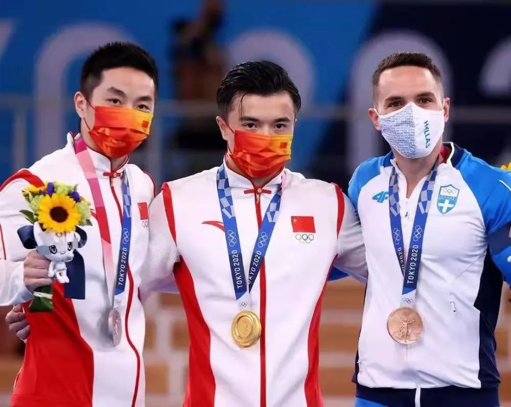

宝剑锋从磨砺出--刘洋老师的冠军之路
【来源】：信息科大奥宣团 | 2021-08-22
2021年8月21日晚，东京奥运会吊环冠军刘洋老师通过腾讯会议与北京信息科技大学奥宣团的师生代表进行了交流。在访谈交流会中，刘洋老师的亲和力和对冠军之路的深刻分析给师生们留下了深刻的印象。

不忘初心，砥砺前行，圆梦东京
访谈之初，主持人高健翔同学以刚结束的东京奥运会为引，谈及刘洋老师在比赛中动作做成功之后，有一个亲吻胸前国徽的动作，公布成绩时也把外套拉链拉开，露出胸前的国旗。对此，刘洋老师说到他当时很开心，感到自己能够给祖国一个交代。他认为自己的成功离不开祖国和人民的支持，这些支持让他有充足的信心去比赛。而不辜负这十多亿的期盼，努力取得金牌就是最好的交代。当两面五星红旗冉冉升起的那一刻，他的内心更是无比激动，但低调的他也笑称：“我都不敢相信这是真的，这就像是做梦一样！”在奥运会中赢得荣光，不仅是刘洋老师的个人梦想，更是中国体操的梦想。当“我的梦”与“中国梦”贴合在一起的时候，你就不再是一个人在奋斗了，梦想也就更加地崇高了。
可也许很少人知道，在前往东京的前一天，刘洋老师的膝盖严重地受伤了。刘老师述说着当时已经是瘸着腿走路了。第二天到达东京后也因为要做核酸检测等事情一直在走路。安顿后教练问到他的情况时，他却说没问题的。因为他很清楚，此时此刻已经没有退路了。他内心想着，自己代表着中国，哪怕这条腿断了，也要坚持完成比赛。刘老师谈到，以前他在受伤时也想过放弃，但这一次他是一点没想过。因为他心心念念的只有祖国的荣誉，此外别无他念。可见，刘洋老师是带着十分坚定的决心去参加比赛的，这决心是世间任何一样东西都不能撼动的。苏轼的《晁错论》中有这样一句话：“古之立大事者，不惟有超世之才，亦必有坚忍不拔之志”。一个拥有对自己的充足信心、对报效祖国的坚定决心的人又怎么会输呢？担负着祖国的荣誉，虽千万伤痛阻挠，吾往矣！这样，当刘老师再回国时，已是奥运冠军。
和许多怀揣梦想的小孩一样，刘洋老师从小就有冠军之梦。5岁时刘洋老师的父母带着他去玩体操，玩着学习着转眼就到了该上学的年纪。在面对学业与体操练习这道决定着人生不同方向的重大选择题上，父母让他自己做选择。他选择了继续练习体操。尽管过程艰难困苦，前路充满着无限的未知，刘老师始终秉持着“既然选择了这条路，就要把它走到底”的想法与“我想成为奥运冠军”这一目标初心，坚持不懈，刻苦训练，最终不负众望地实现了自己的目标。而恰恰是这份坚持，使刘洋老师的梦想并非是儿时戏言。刘老师还表示，尽管达到了这个目标，还是不能忘记曾经的初心，仍然坚持着这份激励自己前进的初心。
不惧艰难，不畏质疑，完善自我
刘洋老师第一次成为世界冠军是在2014年的第45届世界体操锦标赛男子吊环比赛上，当五星红旗冉冉升起的时候，他的内心非常激动。同时，这次成为世界冠军也可以说是他体操事业上的转折点。在体操馆里有一面充满荣誉的世界冠军榜，能出现在这个榜单上不仅是刘洋老师的目标，更是每个进入国家队的队员的重要目标。拿到冠军，照片、名字与众前辈一同出现在世界冠军榜上，这是他实现的第一个小目标。这一目标的实现也必定给了他无限的动力，去冲刺奥运冠军，实现儿时就设立的那个最重要的目标。人生没有白走的路，每一步都算数。在一点点小目标的积累下，终将实现那个看似不可能却充满着无限可能的人生目标。
每个人都会有自己的目标，而实现目标的过程中都会夹杂着一些难忘的经历。让刘洋老师最难忘的就是他受伤的经历，这也是他最缺乏自信、最无助的时候，因为没有人知道这些伤病什么时候能好，这些伤病会不会对上场比赛有所影响。所以说忍受这些伤病的过程也是刘老师最煎熬的阶段，因此也是他最难以忘记的时刻。当然这次让他实现“初心”的东京奥运会的比赛也是让他非常难忘的一段经历，突如其来的疫情导致比赛时间推迟一年，而这一年给了他充足的时间去准备，不过在出发前一个月突发的腰伤给了全身心备战的刘洋老师当头一棒，有四五天只能躺在床上。这些在奖牌背后流的汗水以及承受的苦痛、迷茫与无助，都是很多人不曾了解的。而正是这一切的一切，才成就了奥运赛场上辉煌的时刻，才使得刘洋老师可以站在冠军的领奖台上。这也点醒了我们，不经历一番寒彻骨怎得梅花扑鼻香。 每个人都有成长的过程，运动员也不例外。刘洋老师认为成熟的运动员要经得起煎熬和磨炼，能够比别人更加吃苦便是一种天赋。运动员每天都要训练，一训练就是一整天，最后在比赛场上也只不过是一分钟。而如果在每天的训练中都刻苦努力、坚持不懈，赛场上的一分钟必将成为你的荣耀时刻。所谓成熟和优秀，就是要吃得苦中苦。
刘洋老师是个很有态度的人，对待不公、对待质疑，他有着自己的想法。我们的成长往往都会伴有与自卑、不自信作斗争的经历。而别人的质疑或者是一些不公正的现象常常会更加强这种不自信。当主持人问到刘老师如何面对这些质疑时，他说首先要相信自己，不要马上就陷入自我怀疑。因为如果你连自己都不相信了，那你就真的被打败了。但刘老师所说的相信并非是让我们盲目的自信，那只是一种自我欺骗。他还说要以平时的训练来增强自信心，然后才不会被各种质疑轻易击破，同时他也客观全面地考虑到别人的质疑也适合用来帮助自己反思，别人的话语是否对于完善自己有益，从而让自己不断进步。 在采访的最后，刘洋老师也为信息科大学子留下了这样一段寄语：“非常感谢大家的帮助与支持让我获得这样的荣誉，希望大家能信心满满地朝着自己的目标去努力，当面对质疑、面对不好的言语时要选择相信自己，也要接受别人的批评、反思自己，从自身寻找问题，希望大家可以实现自己的目标！”刘洋老师的话让我们深刻认识到，在成功的道路上，不仅要有信念激励着我们，也要在各种情况下都勇往直前。正如刘洋老师推荐的《追梦赤子心》所唱一样： 向前跑 迎着冷眼和嘲笑 生命的广阔不历经磨难怎能感到 命运它无法让我们跪地求饶 就算鲜血洒满了怀抱
浏览量：34

- 联系
我们

工作日：
早9:00-晚18:00
杨老师：
400-888-8888